We will estimate a GAM model using the mgcv package and the simdat dataset distributed with the itsadug package:
library(marginaleffects)
library(itsadug)
library(mgcv)
simdat$Subject <- as.factor(simdat$Subject)
dim(simdat)
#> [1] 75600 6
head(simdat)
#> Group Time Trial Condition Subject Y
#> 1 Adults 0.00000 -10 -1 a01 0.7554469
#> 2 Adults 20.20202 -10 -1 a01 2.7834759
#> 3 Adults 40.40404 -10 -1 a01 1.9696963
#> 4 Adults 60.60606 -10 -1 a01 0.6814298
#> 5 Adults 80.80808 -10 -1 a01 1.6939195
#> 6 Adults 101.01010 -10 -1 a01 2.3651969Fit a model with a random effect and group-time smooths:
model <- bam(Y ~ Group + s(Time, by = Group) + s(Subject, bs = "re"),
data = simdat)
summary(model)
#>
#> Family: gaussian
#> Link function: identity
#>
#> Formula:
#> Y ~ Group + s(Time, by = Group) + s(Subject, bs = "re")
#>
#> Parametric coefficients:
#> Estimate Std. Error t value Pr(>|t|)
#> (Intercept) 2.0574 0.6903 2.980 0.00288 **
#> GroupAdults 3.1265 0.9763 3.202 0.00136 **
#> ---
#> Signif. codes: 0 '***' 0.001 '**' 0.01 '*' 0.05 '.' 0.1 ' ' 1
#>
#> Approximate significance of smooth terms:
#> edf Ref.df F p-value
#> s(Time):GroupChildren 8.26 8.850 3649 <2e-16 ***
#> s(Time):GroupAdults 8.66 8.966 6730 <2e-16 ***
#> s(Subject) 33.94 34.000 569 <2e-16 ***
#> ---
#> Signif. codes: 0 '***' 0.001 '**' 0.01 '*' 0.05 '.' 0.1 ' ' 1
#>
#> R-sq.(adj) = 0.609 Deviance explained = 61%
#> fREML = 2.3795e+05 Scale est. = 31.601 n = 75600predictions() and plot_cap()
Compute adjusted predictions for each observed combination of regressor in the dataset used to fit the model. This gives us a dataset with the same number of rows as the original data, but new columns with predicted values and uncertainty estimates:
pred <- predictions(model)
dim(pred)
#> [1] 75600 12
head(pred)
#> rowid type predicted std.error statistic p.value conf.low
#> 1 1 response -1.8738546 0.1992173 -9.406085 5.149621e-21 -2.26431957
#> 2 2 response -1.3462927 0.1817494 -7.407413 1.287873e-13 -1.70252064
#> 3 3 response -0.8191262 0.1671242 -4.901304 9.520267e-07 -1.14668881
#> 4 4 response -0.2929805 0.1560516 -1.877459 6.045522e-02 -0.59884099
#> 5 5 response 0.2312910 0.1489156 1.553168 1.203830e-01 -0.06058298
#> 6 6 response 0.7526640 0.1455161 5.172377 2.311341e-07 0.46745317
#> conf.high Y Group Time Subject
#> 1 -1.48338968 0.7554469 Adults 0.00000 a01
#> 2 -0.99006473 2.7834759 Adults 20.20202 a01
#> 3 -0.49156368 1.9696963 Adults 40.40404 a01
#> 4 0.01287995 0.6814298 Adults 60.60606 a01
#> 5 0.52316491 1.6939195 Adults 80.80808 a01
#> 6 1.03787477 2.3651969 Adults 101.01010 a01We can easily plot adjusted predictions for different values of a regressor using the plot_cap() function:
plot_cap(model, condition = "Time")
marginaleffects() and plot_cme()
Marginal effects are slopes of the prediction equation. They are an observation-level quantity. The marginaleffects() function produces a dataset with the same number of rows as the original data, but with new columns for the slop and uncertainty estimates:
mfx <- marginaleffects(model, variables = "Time")
head(mfx)
#> rowid type term dydx std.error statistic p.value conf.low
#> 1 1 response Time 0.02611718 0.001367279 19.10158 2.449658e-81 0.02343737
#> 2 2 response Time 0.02610850 0.001360254 19.19384 4.167026e-82 0.02344245
#> 3 3 response Time 0.02607541 0.001334433 19.54044 4.975241e-85 0.02345997
#> 4 4 response Time 0.02600520 0.001282381 20.27884 1.977388e-91 0.02349178
#> 5 5 response Time 0.02588800 0.001201131 21.55302 4.960033e-103 0.02353382
#> 6 6 response Time 0.02571676 0.001092275 23.54421 1.438981e-122 0.02357594
#> conf.high Y Group Time Subject
#> 1 0.02879700 0.7554469 Adults 0.00000 a01
#> 2 0.02877454 2.7834759 Adults 20.20202 a01
#> 3 0.02869086 1.9696963 Adults 40.40404 a01
#> 4 0.02851862 0.6814298 Adults 60.60606 a01
#> 5 0.02824217 1.6939195 Adults 80.80808 a01
#> 6 0.02785758 2.3651969 Adults 101.01010 a01We can plot marginal effects for different values of a regressor using the plot_cme() function. This next plot shows the slope of the prediction equation, that is, the slope of the previous plot, at every value of the Time variable.
plot_cme(model, effect = "Time", condition = "Time")
The marginal effects in this plot can be interpreted as measuring the change in Y that is associated with a small increase in Time, for different baseline values of Time.
The predict() method of the mgcv package allows users to “exclude” some smoothing terms, using the exclude argument. You can pass the same argument to any function in the marginaleffects package:
predictions(model, newdata = "mean", exclude = "s(Subject)")
#> rowid type predicted std.error statistic p.value conf.low conf.high
#> 1 1 response 11.74971 0.6946584 16.91438 3.525235e-64 10.38819 13.11124
#> Group Time Subject
#> 1 Adults 1000 a01See the documentation in ?mgcv:::predict.bam for details.